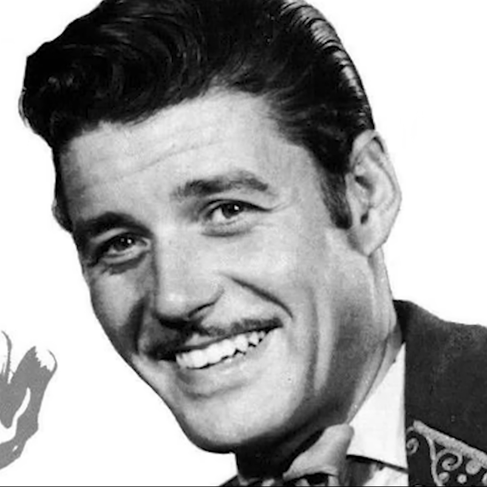

<!doctypehtml>
<html>
<title>Grupo 2</title>
<meta charset="utf-8"/>
<meta name="autor" content= "FFFF"/>
<link rel="stylesheet" href="estilos/estilos.css">


</html>

<body>
<header class="encabezado">
<nav>
	<li>
	<ul>Inicio</ul>
	<ul>Juegos React</ul>
	<ul>JUegos Phaser</ul>
	<ul>apps JS</ul>
	<ul>FI UNJu</ul>
	<ul>Acerca de nosotros</ul>
	</li>
</nav>

</header>


<main>
	<section class="principal">
	<h1>Grupo 2</h1>
	<p>Grupo destinado para trabajar en la materia de Fundamentos de programación Web</p>
	
	</section>
	
	<section class="alumnos">
		
		<article class="alumno">
		<h2>Castro</h2>
		<h3>Jose</h3>
		<p> estudiante</p>
		
		</article>
	
	<article class="alumno">
		<h2>Chaves</h2>
		<h3>Johanna</h3>
		<p> estudiante de la carrera de videojuegos de la UNJU, me gustan los gatos, vivo en el monte, fin</p>
		
		</article>
		
		<article class="alumno">
		<h2>Goitea</h2>
		<h3>Mateo Nicolas</h3>
		<p>Tengo 20 añitos, estudio en la carrera TUDIVJ de la UNJU. Vengo de la ETP nº1. Mi comida favorita es la hamburguesa, mi juego favorito es DOOM, me gusta dibujar.</p>
		
		</article>
		
		<article class="alumno">
		<h2>Flores Chavez</h2>
		<h3>Edgar Franco</h3>
		<p> estudiante </p>
		<p>Actualmente estudio y trabajo vendiendo productos informaticos, en mi tiempo libre me gusta jugar con amigos, salir a acampar e ir gimnasio, apruebeme profe.</p>
		
		</article>
		
		<article class="alumno">
		<h2>Jimenez</h2>
		<h3>Jesús</h3>
		<p> estudiante</p>
		
		<p> soy de Jujuy, Argentina</p>
		</article>
	</section>


</main>


<footer>
<h3>Fundamentos de Programacion Web - TUDIVJ - UNJu</h3>
</footer>

</body>
</html>
